Origins
Several years ago, I told my now-husband that one day, I would make a portrait of him. It was a hobby of mine a long time ago; mostly I painted musicians I admired and occasionally made a self-portrait just for the challenge of it. I was no prodigy, no great talent, but I enjoyed it. Twenty years ago, I was making several black and white portraits a year, mostly in acrylic paint on a wood "canvas" that I would make in our basement shop. When I finally sat down to make this portrait, it had been years since I had drawn at all. A couple of months prior, I'd had my husband stand by the window in my office so I could get some pictures of him in soft, natural light. This style of lighting is my favorite for portraiture because the relatively high contrast it provides between light and dark helps to accentuate the features of a face.
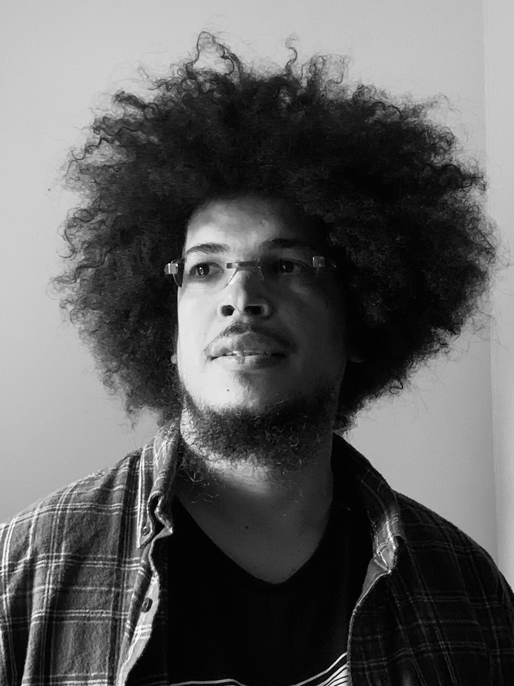 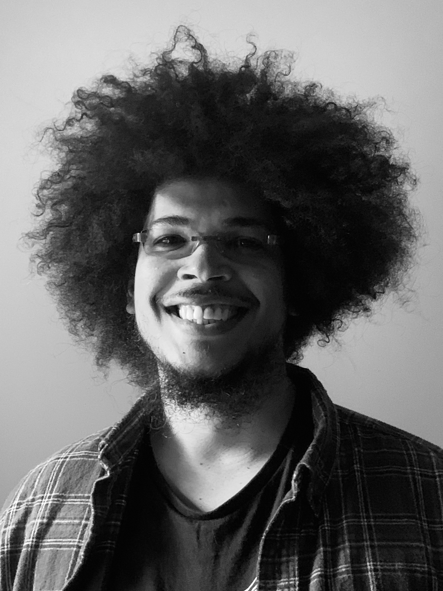 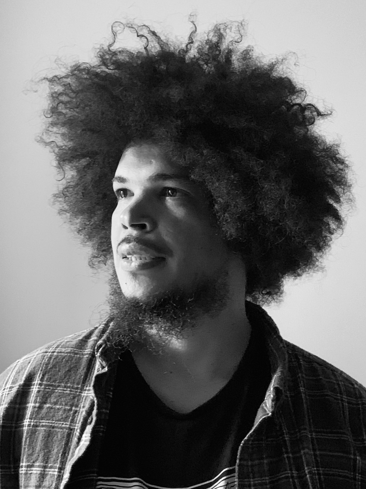Months later, while he was away on business and without his knowledge, I finally put his likeness to paper. I documented the process in case he was curious.
Preparation
I decided that charcoal was the way to go. It is a very forgiving medium. Charcoal can provide softness or hard lines depending on how you apply it. It is fairly easy to manipulate, to create a gradient of lightness and darkness, to work and rework until you have the desired effect. My favorite method involves using a toned paper, here a light gray, and first rubbing the whole page with a firm stick of charcoal and then using a soft cloth to blend and even out the whole page, repeating as needed until I have achieved the right tone.
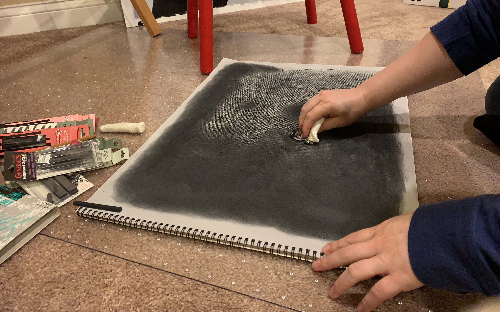 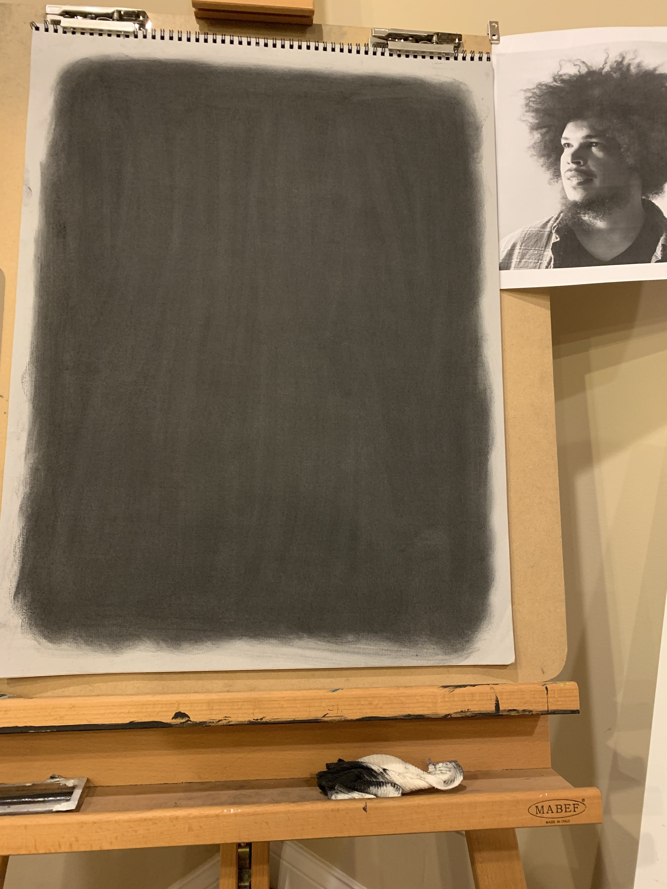Drawing With Negative Space
A gray kneaded eraser, warmed and smooshed in my hands, and molded into a sort of teardrop shape with a soft point, was the perfect tool to rough in some outlines and features. One of the most interesting aspects of working with charcoal is starting with a black surface and actually drawing in the negative space—the lighter areas—rather than starting with a light page and adding the dark areas as you would with a pen or pencil. There is something almost magical about pulling features one by one out of the darkness until they form a recognizable face.
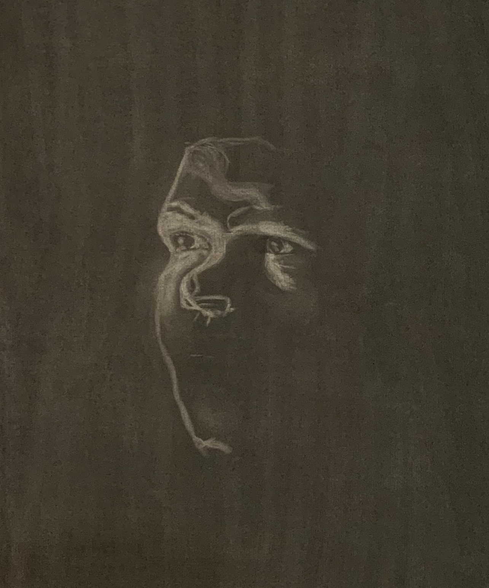eraser, removing material to reveal the gray paper under the charcoal.
Using the eraser to lighten the tone and a stick of charcoal to add black back in as necessary, I worked away for three or four hours, giving shape to his face, neck, shoulders, and hair and making small adjustments to the proportions of his features until I was too sleepy to continue.
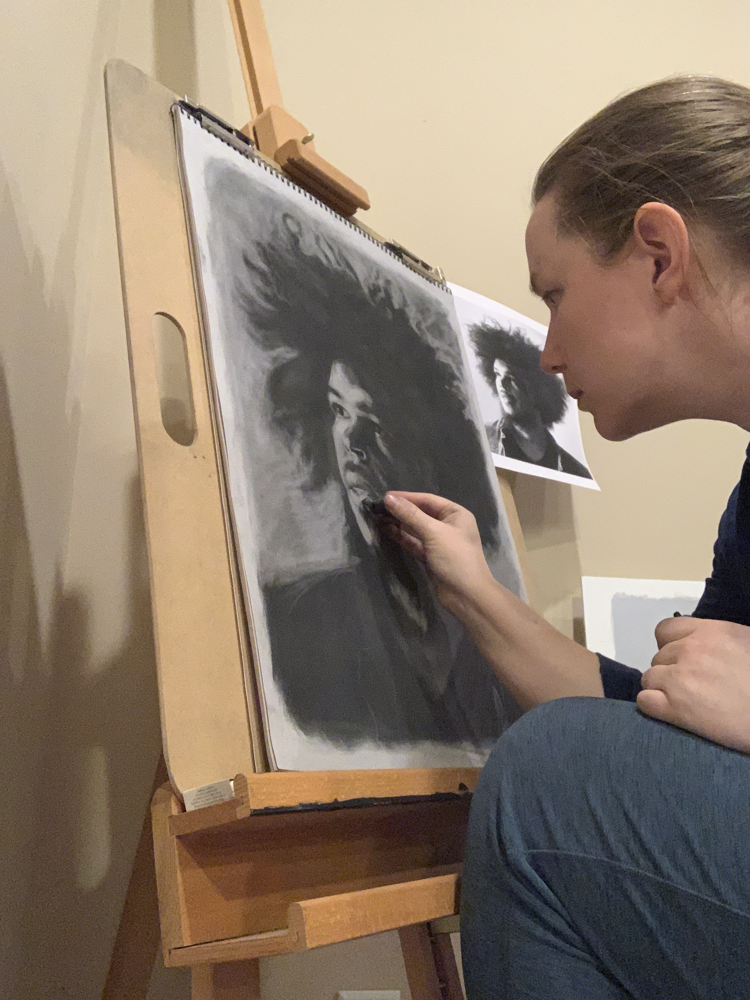
A Light in the Eyes Makes It Come Alive
The next day, after a good sleep, I returned to my work-in-progress with fresh eyes. I had been hesitant to take away too much around his hair, but the ratio of face to hair was off, so I went ahead and cropped it down with the eraser, knowing I could always put it back in later. I used the eraser to shape his shoulders and pull out the contours of his shirt. Once the majority of the portrait was done and no significant adjustments to shape and proportion were anticipated, I began adding highlights to increase the contrast between the darkest and lightest elements of the portrait, giving it depth and bringing it to life. I used a white chalk stick to add bright spots to his cheek and forehead, chin, lips, nostrils, and most importantly, eyes. It has always been incredible to me, how a tiny fleck of white can make an eye appear glossy and shiny and the person, alive.
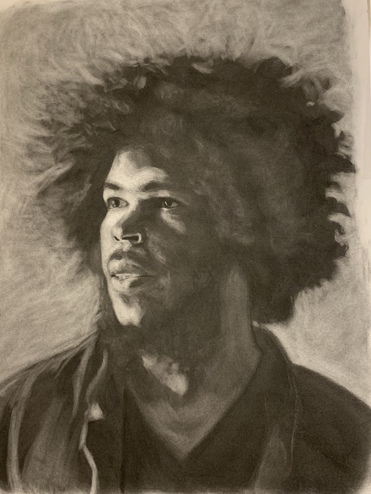 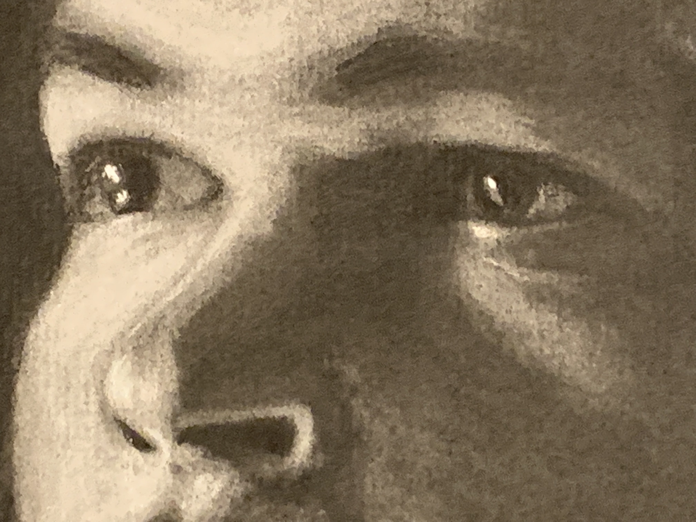The Crown
Finally, it was time to go back and give my rendering of his hair the attention it deserved. I spent some time standing back from it and using a pencil to compare dimensions on the photo I was working from. When I felt ready, I picked up the charcoal and a soft cloth for blending and started building his afro back up to its proper glory, placing each curl just as it appeared in the picture, to the best of my ability. I struggled a bit not to over-lighten the front portion over the left side of his face, which in the photo is just slightly illuminated by the sunlight, accentuating its shape.
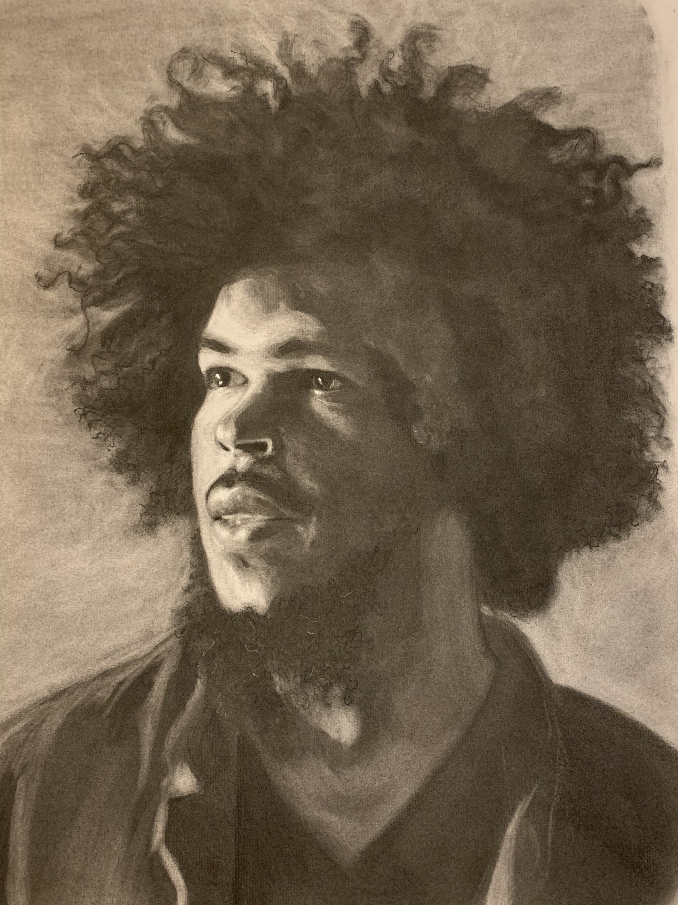 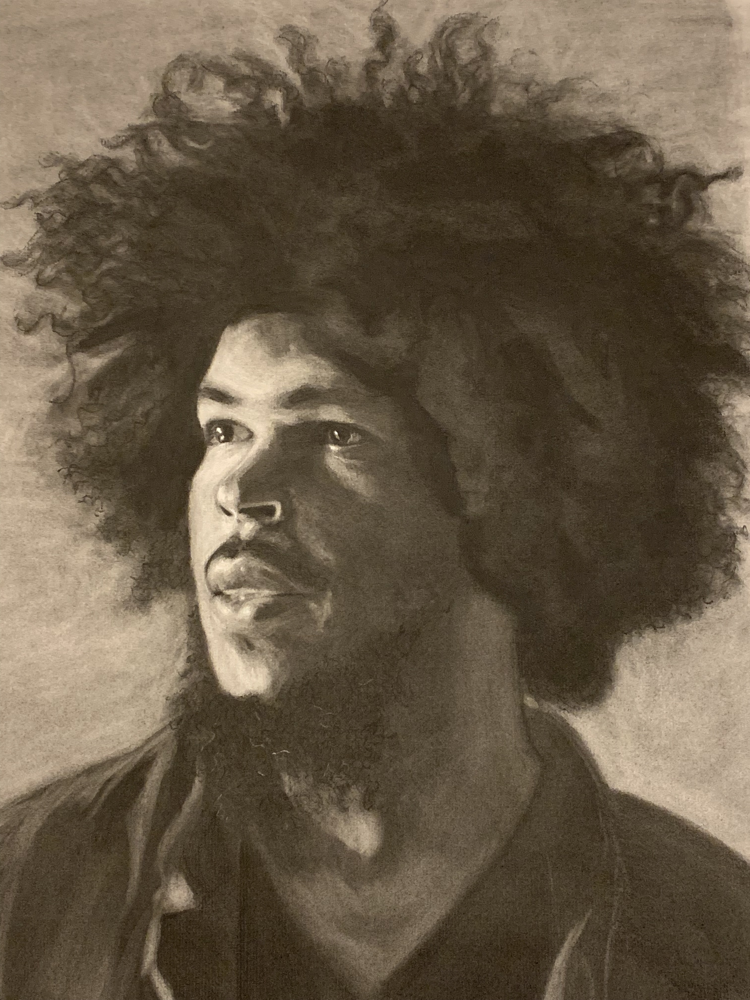Knowing When to Stop
Throughout a project, there is always a calculation running in the back of my head: if I keep working on this, what are the chances it will be better than it was before? What are the chances I'm just fiddling with details and risking undoing some hard work? At the beginning, there is almost no chance it will be worse if I keep going. Rarely am I 100% satisfied with my work, but as I get things closer and closer to where I want them, it's so important to me to recognize when it's done and let it be done. After a total of about ten hours, 3-4 times longer than I'd spent on my previous charcoal drawing, I put down my chalk and my charcoal and called it a portrait. The final step, after which I never continue working, was to sign it.
He loved it.